| > | with(Student[Calculus1]): |
| > | with(linalg): |
1(i)
| > | f := (x) -> (3-x)/(5-2*x); |
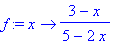
| > | solve(x=f(y),y); |
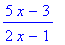
1(ii)(a)
| > | simplify(diff(exp(-x)*sin(x+1),x)); |
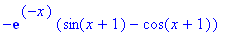
1(ii)(b)
| > | diff(cos(x^2+3*x+1),x); |
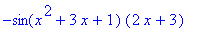
1(ii)(c)
| > | simplify(diff(exp(x)/(2+sin(x)),x)); |
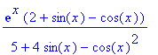
1(iii) Omitted
2(i)(a)
| > | Int(x * sin(x^2),x); |
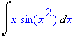
| > | Rule[change,u=x^2](%); |
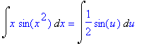
| > | Rule[constantmultiple](%); |
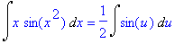
| > | Rule[sin](%); |

| > | Rule[revert](%); |
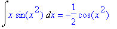
2(i)(b)
| > | int((3*x+2)/(x^2+4),x); |
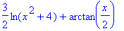
2(ii)
| > | Int(1/(x*(1+ln(x)^2)),x=1..exp(1)); |
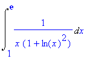
| > | Rule[change,u=ln(x)](%); |
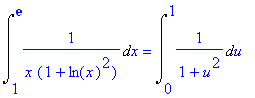
| > | Rule[constant](Rule[change,u=tan(v)](%)); |
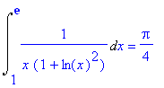
2(iii)(a) Omitted
2(iii)(b)
| > | int(x^2*exp(3*x),x); |
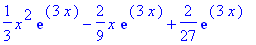
| > | int(x^2*exp(3*x),x=0..3); |
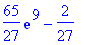
3(i)
| > | A := matrix([[1,2,0,2,7], [0,3,-3,4,5], [2,1,3,-1,10], [-1,-3,1,-5,-7]]); |
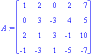
| > | rref(A); |
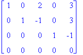
| > | solve({ x + 2*y + 2 * w = 7, 3*y - 3*z + 4*w = 5, 2*x + y + 3*z - w = 10, -x - 3*y + z - 5*w = -7}, |
| > | {x,y,z,w}); |
3(ii)
| > | A := matrix([[1,1,1],[1,0,1],[-1,-1,1]]); |
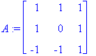
| > | B := matrix([[1,-1,1],[0,-1,1],[1,0,1]]); |
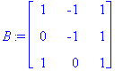
| > | evalm(A &* B); |
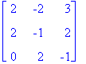
| > | evalm(B &* A); |
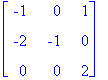
| > | evalm(A &* B - B &* A); |
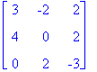
3(iii)
| > | det(matrix([[1,a,0],[2,1,-1],[-a,2,3]])); |
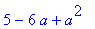
| > | factor(%); |

The equations have a unique solution except when a = 1 or a = 5.
4(i)
| > | convert((7*x^2-2*x+13)/((x+2)*(x^2-x+3)),parfrac,x); |
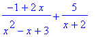
| > | int((7*x^2-2*x+13)/((x+2)*(x^2-x+3)),x); |
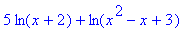
| > | int((7*x^2-2*x+13)/((x+2)*(x^2-x+3)),x=1..2); |
4(ii)(a)
| > | solve(abs(x-2)<2,x); |
(This means the open interval (0,4))
4(ii)(b)
| > | solve(x^2-5*x+4 >= 0,x); |
(This means the union of the intervals (-infinity,1] and [4,infinity).)
4(ii)(c)
| > | solve(x^4-5*x^2+4 >= 0,x); |
(This means the union of the intervals (-infinity,-2], [-1,1] and [2,infinity).)
4(iii) Omitted
| > |